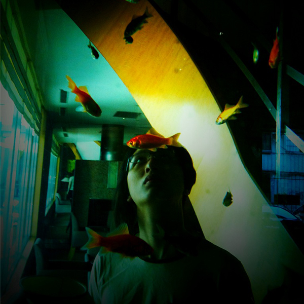

Day 1 (5/15)
| 時間 | 第一會議室 | 國際會議廳 | 第二會議室 |
|---|---|---|---|
| 9:30-9:40 | 開場 | ||
| 9:40-10:30 |
大會主題演講Brendan Eich JavaScript 之父 JavaScript at 20 YearsI created JS in ten days in May, 1995, and it grew rapidly with the rise of the World Wide Web due to Netscape's popularity. In this talk I will recount the early days in as much detail as my memory affords. I will also show examples from the Netscape 2 days that prefigure the modern ʺWeb 2.0ʺ or ʺAjaxʺ single-page application movement. I will close by looking forward to the future of the ʺHarmonyʺ era, with ES6, ES7, both high- and low-level language features, and compilers galore. |
||
| 10:30-10:40 | 中場休息 | ||
| 10:40-11:20 |
曾義峰(Ant)
希幔科技 總工程師
Redis, another step on the road
Introductionto Redis 3.0, and it’s features and improvements. What’s difference between Redis / Memcached / Aerospike ? The strong sides of Redis, and away from the weak sides. 本議程介紹Redis 3.0及其歷史，探討Redis的特性與改進。並一併分析Redis / Memcached / Aerospike三者之間的差異，有助於未來面對業務場景需求提供瞭解與判斷。最後，分享Redis適用之場景，及其不適用場景下的備案或整合方案。議程適於Redis初學者、對Redis想深入瞭解者，及曾經莫名被Redis雷擊或坑殺者。 |
蔡學鏞(Jerry Tsai)
中國平安集團 首席架構師
三維架構方法
蔡學鏞根據多年的架構設計經驗，提出一套三維度的架構方法，成為許多軟體專案的指導方針，內容包含：
|
葉俊麟(Michael)
justfont Co-founder
網頁字型與排版
字型的討論近年來越來越熱門，中文網頁的字型選用與排版目前越來越多被討論到。如何針對網頁設計選用適合的中英文字型? 網頁標籤對字重的選擇會造成什麼樣的問題? 這次主要會要針對網頁中常遇到的字型選用、中英混排等常見的進行討論，避免常見到的字型與排版錯誤。 |
| 11:20-11:30 | Break | ||
| 11:30-12:10 |
陳世偉(Hina)
獎金獵人 掃地僧 CTO
酒館的進退之道
當產品背後的骨架無法壯大，破壞與建設就會變成必要的一場革命。我們使用 phalconPHP 取代了 Drupal 做為產品核心，也藉由這次的轉換，來解決產品、業務與開發上面，所遇到的諸多疑難雜症。在這場革命當中，學習對於產品的進退之道，或許能帶給同樣處於這個階段的你們，一點點前進的動力。
|
邱光宗
拓元股份有限公司 執行長
雲端系統對爆量的測試與準備 以張惠妹秒殺售票為例
拓元售票利用AWS的架構，在十二分鐘內，完成張惠妹十場小巨蛋、十二萬張票的售票服務。事前做了哪些準備及測試？架構上又如何調整？
|
李俊鋒(Fung)
Polydice, Inc. DevOps Engineer
「DevOps的日常」
DevOps是什麼? 平常都在做些什麼? 這次會介紹DevOps在愛料理開發流程中扮演的角色，依序從環境->部署->監控->維運等面向展示DevOps需要面對的各種情境，以及如何透過第三方服務優化和減低時間跟人力成本。 |
| 12:10-13:30 | 午餐 | ||
| 13:30-13:55 |
Poga
KKTIX Engineer
聽說 KKTIX 現在都是用 Go 寫的
面對不停改變的需求與規模，該如何選擇適合的新工具以減輕負擔？ 聽說 KKTIX 改用 Go 之後，一台伺服器可以打十台？ 本次將分享 KKTIX 為何選擇 Go，以及採用 Go 之後得到的好處。 |
高偉格(OThree)
HTC Front End Engineer
TypeScript 過去現在未來
TypeScript 是微軟所研發的 compile to JS 語言，其將靜態型別檢查再次帶入 JavaScript 的世界中，在這之前的 ECMAScript 4 標準其實也曾經要將其導入，不過在 ECMAScript 4 標準廢棄後逐漸為人所遺忘，也因此初期 TypeScript 並不太被重視。 發展至今已經兩年多，隨著大型 JavaScript 專案的出現，TypeScript 也逐漸受人重視並浮上台面，除了 Google 的 AngularJS 2 使用外，其它還包括了 Asana、Mozilla 的 Shumway 專案等都有採用，而 Google 的 Angular Team 更進一步發展了 AtScript，將 runtime 的動態型別檢查和註文(annotation)也帶到 JavaScript 中，藉由編譯成 ECMAScript 5 標準的語法，現在就已經可以使用到 AtScript 的動態型別檢查以及 metadata annotation 的功能。 本演講除了介紹 TypeScript 以及 AtScript 的特色之外，還將介紹兩個語言的未來發展，而這發展也和 ECMAScript 的未來息息相關。 |
許國政(Kuro Hsu)
永慶房產集團 / 好房網 前端工程師
D3.js 圖表優化二三事
D3.js (Data-Driven Documents) 是利用資料驅動文件的一套 JavaScript Library。透過資料的內容來驅動 HTML 上的物件，並使用網頁標準技術呈現各種資料，也可加入各種事件來驅動功能，完成資料視覺化的工作。這場議程將為各位分享，如何使用 D3.js，並說明繪製圖表時優化的技巧，以及如何避開那些開發時容易踩到的地雷。
|
| 13:55-14:05 | 中場休息 | ||
| 14:05-14:45 |

大會主題演講唐鳳 Haskell 與 Perl 6 核心貢獻者 開源之道，Open Source Enlightenment我們參與開源社群，就像是在一條道路上並肩而行：這不僅讓我們成為更好的創作者，也讓我們通過與人合作，而成為更好的人。
這是一條修行之道，讓身而為人的我們能夠不斷成長。我想談談我對開源世界的個人觀點，希望能與大家分享。 |
||
| 14:45-14:55 | 中場休息 | ||
| 14:55-15:20 |
白超熠
網頁設計，是你認為的好工作？—馬克思主義的觀點
網頁設計，是一種工作。不過工作這麼多種，為什麼有的工作人人搶著做，有的工作人人避之不及？這個演講將從馬克思主義「異化勞動」以及「生產工具」的觀點，討論網頁設計這份工作。 在馬克思眼中，在資本主義之下，人漸漸被異化而失去人的本質。但是，在資訊科技的發展之下，人類似乎有扭轉這個異化進程的可能性。我們來看網頁設計師作為資訊行業的一份子，如何在趨勢的最前端取回作為人的「本質」。 |
保哥(Will)
多奇數位創意有限公司 技術總監
ASP.NET 5 的創新與變革
Web技術的變化之快速，不再有任何一家公司或團體可以主導其走向，即便軟體界的巨人微軟也不例外，ASP.NET經過了十多年的發展與演進，終於來到了一個架構翻新的時刻，即將推出的ASP.NET 5到底從架構面、工具面做出了哪些創新與變革，將在這場演說中一一展現。
|
邱煜庭(小黑)
ASAP閃電購物網 行銷總監 |阿物國際 掃地僧
SEO真的只要做這些事就好
SEO 到底要做哪些事情？你或許看過許多網路文章及書籍，但總是搞不懂到底做什麼才會符合「搜索引擎的要求」。 決定排名的要素可能超過 200 項以上，但每件都做到又不太可能。 在 Modern Web 2015 的議程中，我們以電子商務網站架設為例，從技術面出發，配合一點點的行銷概念，來看在 2015 以後的 SEO 究竟要做哪些事情，其實對你的搜尋引擎排名就很有幫助！ |
| 15:20-15:50 | 下午茶交流時間 | ||
| 15:50-16:15 |
梅興
輔仁大學資訊工程系 副教授
穿戴世界中Web的角色 – 從Web Computing 到 Wearable Computing
從Web Computing 到 Wearable Computing 本主題將介紹與探討穿戴世界中Web的角色。 Web在上世紀90年代初期開始，經歷了XML的內容標準化運動；Web2.0風潮；一直快速的發展。2010年智慧手機APP正熱的時候，Wired雜誌上的一篇以Web is Dead為標題的文章，讓一些人對Web產生了懷疑。 然而，Web的發展並未因這篇文章而受阻，除了HTML5和前端開發技術的欣欣向榮外，Web核心基礎的HTTP2也日漸成熟。2014年被稱為穿戴式元年，各種創新的穿戴式裝置和服務大量出現。 現今的穿戴式裝置中，絕大多數都是利用手機當作中間閘道，然後與後端的Web伺服器溝通。部分穿戴式作業系統的網路堆疊中直接支援HTTP；甚至於JavaScript 也加入了穿戴式應用的開發陣營。Web Computing 在 Wearable Computing中的核心角色是不容置疑的。 |
郭志偉(Alive Kuo)
Mozilla 資深軟體工程師
1UA MultiScreen
在手機的世界中，跨螢幕呈現(MutilScreen Presentation)多為 2UA或鏡射式的實作。在此分享在 Firefox OS 上實作非鏡射式 1UA MultiScreen 的過程與面臨的挑戰。 |
Marty Hsu
慶奇科技 創辦人
Web + Arduino 實在有夠潮!
雖然 Arduino 是如此的天生神力，也有包羅萬象的傳感器等著我們去使用，但要控制這些形形色色的傳感器，就必須要具備 C/C++ 的基礎知識，對於前端工程師好像沒有一些輕鬆的開發方式，可以把這些複雜的領域全部囊括整合。 Webduino 是從前端工程師觀點出發，將Arduino傳感器封裝成 Web元件，直接使用HTML+JavaScript就可以控制Arduino以及傳感器，讓前端工程師輕鬆使用Web技術控制Arduino，IoT開發立即上手。 講題將介紹Webduino發展理念，技術上如何實現，逐步說明開發情境與方式，讓Web開發者立即擁有IoT開發能力。 |
| 16:15-16:25 | 中場休息 | ||
| 16:25-17:05 |
鄭遠祥(LY)
Watchout Co. 工程師
Webpack pack your web.
介紹什麼是 webpack，webpack 的優點以及 webpack 基本設定和運作。 各種方便好用的 webpack loader 和 plugin。在 webpack 中強大的 Hot Module Replacement 的原理和使用，如何寫出進階的 webpack configuration，如何整合 express 和 webpack-dev-server。 |
Paul Li
Yahoo EC Front End Engineer
The Speed & The Enthusiasm (速度與激情)
每每產品進行 release, 總需要動用大量的人力來進行測試 不但耗時又費工 如今, 透過 Protractor 以及 Cucumber 的雙重激盪 這些精緻手工業將正式走入歷史, 導入 BDD 的 automation 不僅易懂且精實 更能確保自己的產品在一定 quility 之上, 藉由 page object pattern 的導入 更讓整體開發與測試提升至另外一種境界 工程師們不僅可以更加專注於開發之上 更能將產品品質量化, 提供令人信服的數據 重拾昔日的熱情與驕傲 |
李慕約
SheetHub.com 共同創辦人
Modern Web technology to interact with (Big) Data: Voice Control, Data Visualization and Data-Driven Animation
Modern Web brings us some fancy technology, but how can it help us to understand (Big) Data?
|


Day 2 (5/16)
| 時間 | 第一會議室 | 國際會議廳 | 第二會議室 |
|---|---|---|---|
| 9:30-9:40 | 開場 | ||
| 9:40-10:30 |
大會主題演講Rasmus Lerdorf PHP之父 Speeding up the Web with PHP 72015 marks the 20th anniversary of PHP and it also marks the release of PHP 7. PHP 7 brings drastic performance improvements along with a number of new features including optional scalar typing, anonymous classes, and a couple of new operators. |
||
| 10:30-10:40 | 中場休息 | ||
| 10:40-11:20 |
張家齊
木刻思股份有限公司
Websites in Data Driven Generation: Navigation, Searching, Recommendation
|
戚務漢(Caesar)
Hiiir 時間軸股份有限公司 工程師
從失敗中學習打造技術團隊
從資淺到資深，透過不同時空背景，透過經歷不同開發流程中，經歷許多不同失敗經驗的累積，打造出團隊共同經驗，以及團隊建構出開發環境與流程。
|
何中勛(Lawrence Ho)、吳佳勳(Harry Wu)
Yahoo亞太區行動產品開發暨設計中心高級設計師
Design with U.S.E.R.
設計不是角色，而是思考方式、流程與文化。在聚集各路好手的環境中， 建立不同背景成員之共同目標，讓每個人發揮不同超能力的同時，激發出團隊火花，共同創造最好的產品與服務...這些背後原因，就是U.S.E.R.
|
| 11:20-11:30 | Break | ||
| 11:30-12:10 |
葉秉哲(William Yeh)
Gogolook 系統架構師
安裝 Nginx 的 101 種方法／Ansible 簡介
以典型的 Nginx 軟體為例，逐步探討傳統安裝方式的不便之處， 並分析像 Ansible 這樣的組態管理系統 (configuration management)， 能在自動化、模組化、便利性等方面，帶來什麼樣的好處。 全部內容都附有可重現的實作範例。 |
林嘉軒(GSLin)
用 Vagrant 與 Docker 拯救世界
Vagrant 用以管理虛擬開發環境，而 Docker 提供了輕量容器。在這次的議程裡將會介紹如何用 Vagrant 管理多個 Docker 容器開發與測試。
|
王啟恩(Adam)
Pinkoi 前端工程師
Pinkoi 把手機版網站變好用了
Pinkoi 是亞洲最大的設計品電子商務網站，在不同平台提供使用者良好的體驗。在「行動優先」的趨勢中，「手機版網站」（mobile）往往是較少被討論到的，講者根據在 Pinkoi 製作手機版網站的經驗，分享前端工程和網頁設計上的技巧，讓使用者瀏覽網站時能有最好的體驗。
|
| 12:10-13:30 | 午餐 | ||
| 13:30-13:55 |
Gasolin
美商謀智 資深軟體工程師
JavaScript，征服世界是可能的嗎？
Javascript 20歲了。 從瀏覽器出生，Javascript 語言走過從略顯青澀，不被大眾視為是程式語言的童年期，成長到能用作開發大型線上應用程式，效能急速提升的少年期，近五年更藉由 node.js 的幫助，發展出可在伺服器後端、命令行、編譯工具等領域表現的新專長。並透過 Cordova、NW.js、React Native 等夥伴的幫助，進軍桌面、行動裝置開發的領域。 它的出鏡率太高，甚至吸引了一票願意化妝(transpile)成 Javascript 的同人。 本議程試著和大家一起回顧 Javascript 的過去與未來，與在各領域的發展狀況。 |
Jeremy Lu
從 React Native 看 "Learn once write anywhere" 帶來的開發典範轉移
Facebook 於 2015 年 1 月在第一屆 React Conf 中推出了 React Native 開源方案，它讓技術人員可用熟悉的 javascript/css 快速開發原生 iOS/Android 應用程式，由於不再依賴 webview 與 html 因此效能表現極佳。 伴隨此方案也介紹了 ʺLearn once write anywhereʺ 概念，強調學習一套手法即可在不同環境上依該平台特性開發程式並獲得最佳用戶體驗，相較於以往 ʺWrite once run anywhereʺ 這是一個更務實的心態。 此技術與概念一推出後即被視為將永久改變「應用程式」的開發典範與未來。 本場將為大家介紹：
|
謝東成(Duncan Hsieh)
IxDA Taiwan 理事
Web 的即時互動怎麼玩？拿來做即時線上遊戲吧！
在公司利用 Web 的技術，來做一些瘋狂的奇怪實驗，其中 realtime 是公司今年要玩的技術，再公司的研究和實驗心得，拿出來和會眾分享。 先簡短介紹目前 Web 可以實作的 realtime 技術，polling、long polling、bosh、websocket、SSE。 realtime 技術的四種用法，單向通知、雙向訊息、pub/sub、Data Sync拿四個用法來組成一個線上遊戲！ |
| 13:55-14:05 | 中場休息 | ||
| 14:05-14:45 |
大會主題演講松田明 Ruby 和 Rails 核心開發者 How the East Was WonRuby is, as far as I know, the first and probably the only programming language so far that was originally created in Asian region and then spread out all over the world. But why only Ruby could achieve that success and fame? Which feature, or aspect of Ruby made it possible? Why is Ruby Ruby? Let us look back 22 years history of the language, and find the secrets! |
||
| 14:45-14:55 | 中場休息 | ||
| 14:55-15:20 |
Eric Chuang(ddsakura)
Yahoo Lead Engineer
When web meet native app
In this session, I wanna share the experience that how to integrate mobile web in native app, not just call webview and loadurl, but also somethings can improve user experience.
|
李致緯(Richard Lee)
Polydice, Inc. CTO & Co-founder
愛料理如何打造產品及技術團隊
愛料理是目前全台灣最受歡迎的女性網站之一，以使用者上傳的七萬多道食譜為主，每個月吸引了超過 300 萬的不重複訪客，也衍伸了包含市集、影片以及討論區等相關功能。我將分享愛料理團隊是如何設計、規劃出這些產品，並在功能上線後是如何從使用者端得到重要的意見，並且持續的改進產品。
|
Olivier Klein
Solutions Architect, Amazon Web Services
AWS Lambda in the Browser: Javascript interface and Node.js app without a single Server
Learn how to leverage Amazon Web Services new compute technology to power highly-scalable, resilient, cost-effective and efficient web applications without the need to run a back-end server. In this presentation you will learn how AWS Lambda can be used to start running your code within milliseconds of a browser event such as a form submit, click or mouse movement. It includes a demonstration of a JavaScript application within the browser that allows to interact with a NoSQL database service, trigger notifications and load new user generated content without a single server with the help of JavaScript, Node.js and AWS Lambda. |
| 15:20-15:50 | 下午茶交流時間 | ||
| 15:50-16:15 |
何澤清
黃碼科技 Web Developer Designe
使用 React.js 協助開發 Rails 產品
近年來，網站對資料視覺化的需求增多，在前端效果的處理上越趨複雜，要如何維護好前端架構，成為基本課題。 Web Components 的概念中，React.js 是個不錯的實作，只要遵守基本的 Life Cycle 流程，很容易搭配其他的前端套件。 過去選用 Rails 實作網站，能快速建構好雛形，並維持一定的可維護性。 然而前後端的架構越趨獨立，正確使用 Asset Pipeline 才不致於讓專案支離破碎。 我想要以產品開發實例，來分享怎麼讓 React.js 和 Rails 做有效的結合。內容將涵蓋 assets 的結構、React.js component 的撰寫、資料的餵送，和頁面元件的互動等議題。 |
李建杭(Amos)
CSS3 3D實務應用
CSS3已經出來了這麼久了，網頁瀏覽器大多都已支援CSS3 3D效果了，你還停留在2D的設計思維嗎？讓我們大家一起來玩CSS3 3D解救這個世界的網頁設計吧！ 其實3D並不難，只要會用CSS切版，做個簡單的3D效果其實很容易的，此外使用CSS來撰寫3D效果，很容易就能讓網頁帶來令人驚豔的效果。此外在議程中也會分享一些CSS3的小秘密給大家喔。 |
橋本正德(Masanori Hashimoto)
Nulab Co-founder 暨CEO
如何透過設計解決服務的問題及吸引更多用戶
In 2004, we launched our first service, Backlog - a web based project management tool, however we got many negative comments from users. Now, after 11 years, over 3,500 international companies are using Backlog and number of users are still growing fast. How did Backlog change from a tool that everyone thought would fail to a tool that used by many famous companies? The secret is " Design" ! Design is the most important elements in our services. In this session I'll share what we did to improve Backlog's UI in order to keep existing customers and attract more customers. 在2004年，Nulab推出第一個服務:貝格樂線上專案管理工具，但我們卻得到許多負面的評價，服務的前途堪憂。 如今，11年過去了， 全球卻有超過3500個的企業都在使用貝格樂，而且用戶數量還在快速地增長。 到底這段時間我們做了什麼讓這個每個人都認為會失敗的服務成為眾多知名公司選用的管理工具？ 答案就是“改變設計”！設計是貝格樂成功的最重要因素之一。 我將在這次議程中分享我們是如何改善貝格樂的UI，以保留既有客戶及吸引更多的新客戶。 |
| 16:15-16:25 | 中場休息 | ||
| 16:25-17:05 |
范聖佑
得寬科技 研究員
給 PHP 開發者的 Composer 錦囊
對於 PHP 開發者而言，使用 Composer 處理套件相依已是標準程序，對於習於使用框架的開發者而言更是如此。但也往往因為太習以為常，導致僅會使用基本指令而忽略進階技巧。 在這場講座裡，講者將從日常開發工作中汲取出幾個常見情境，依此脈絡分享數個關於 Composer 的使用錦囊，做為進一步認識 Composer 核心的敲門磗，期盼能讓更多 PHP 開發者熟悉自己的工具。 |
陳雅博(Albert Chen)
Pebbo 執行長
用戶體驗不是一個部門
用戶體驗（UX）近來已成一種商場的主流學說。各大企業爭先恐後的成立了各類的用戶體驗團隊，各種訓練課程如雨後春筍般的冒出來。 究竟UX是什麼？這股熱潮又即將帶領我們上天堂還是住套房？Albert希望在這場演講中與大家分享過去多年從企業顧問到創業夥伴的實際觀察與案例。幫助大家在此熱潮中可以知道UX的真正意義。 |
吳政斌(Chris)
賦格創意 CTO
從技術角度看 Responsive Web Design
Responsive Web Design 帶來了網頁技術的革新，僅僅透過 Media Queries 偵測螢幕尺寸，便能提供適合不同尺寸裝置的內容與樣式。 但光是從螢幕尺寸來偵測行動裝置的瀏覽能力，無疑是瞎子摸象。近兩年內的智慧型手機已經數度提高尺寸與解析度，行動網頁的媒體品質與豐富性也須一併提升。在內容品質提升的同時，過多的圖片或物件可能會降低使用者經驗或付出較高的代價。 從技術角度來看，可歸納『資源一致性』、『相容彈性』、『環境適應』、『品質最佳化』等四個要素。本題將就此四項要素介紹應用實例，說明如何提高 Responsive Web 的彈性，並增加行動網頁瀏覽效率。 |
| 17:05-17:15 | 閉幕 | ||
(講師、議程及演講主題更動以主辦單位公布為主；TBA = To Be Announced)